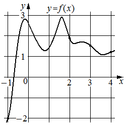

Впишите правильный ответ.
На рисунке изображён график функции y=f(x) . На оси абсцисс отмечены точки − 1 , 2, 3, 4. В какой из этих точек значение производной наибольшее? В ответе укажите эту точку.

КЭС: 4.1 Производная функции. Производные элементарных функций
Тип ответа: Краткий ответ
Источник ФИПИ